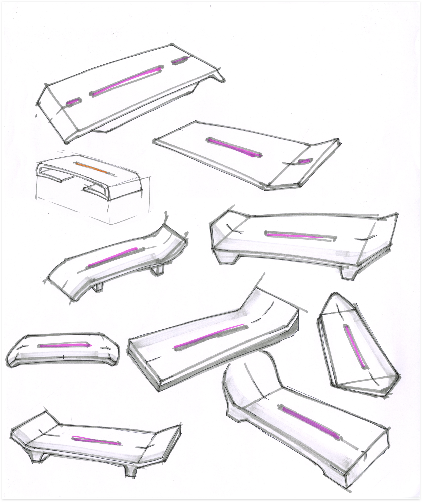
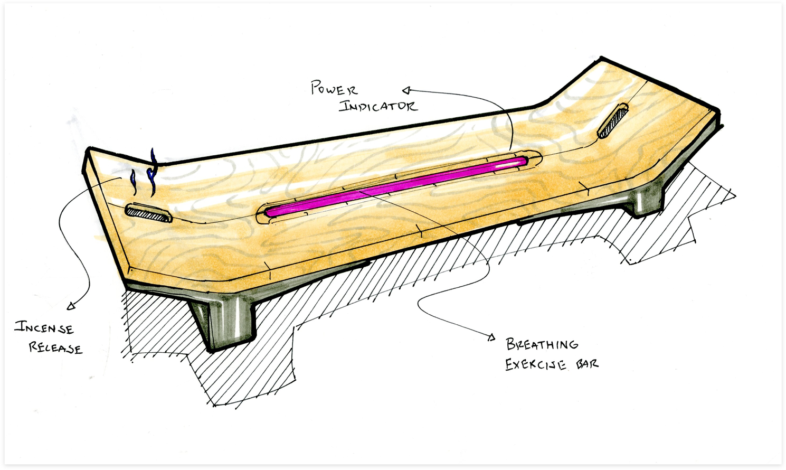
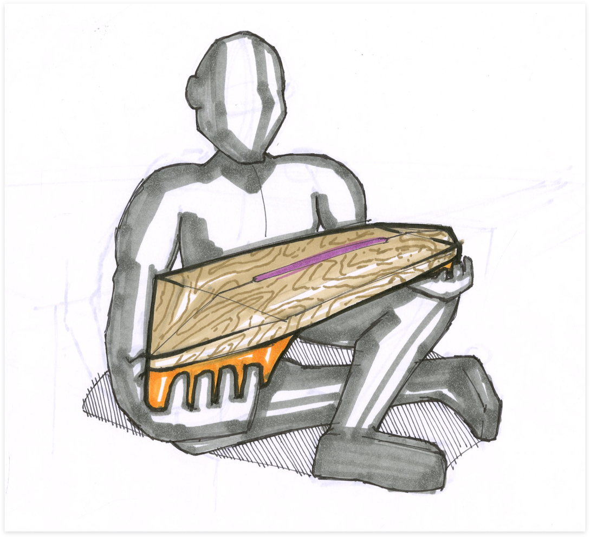
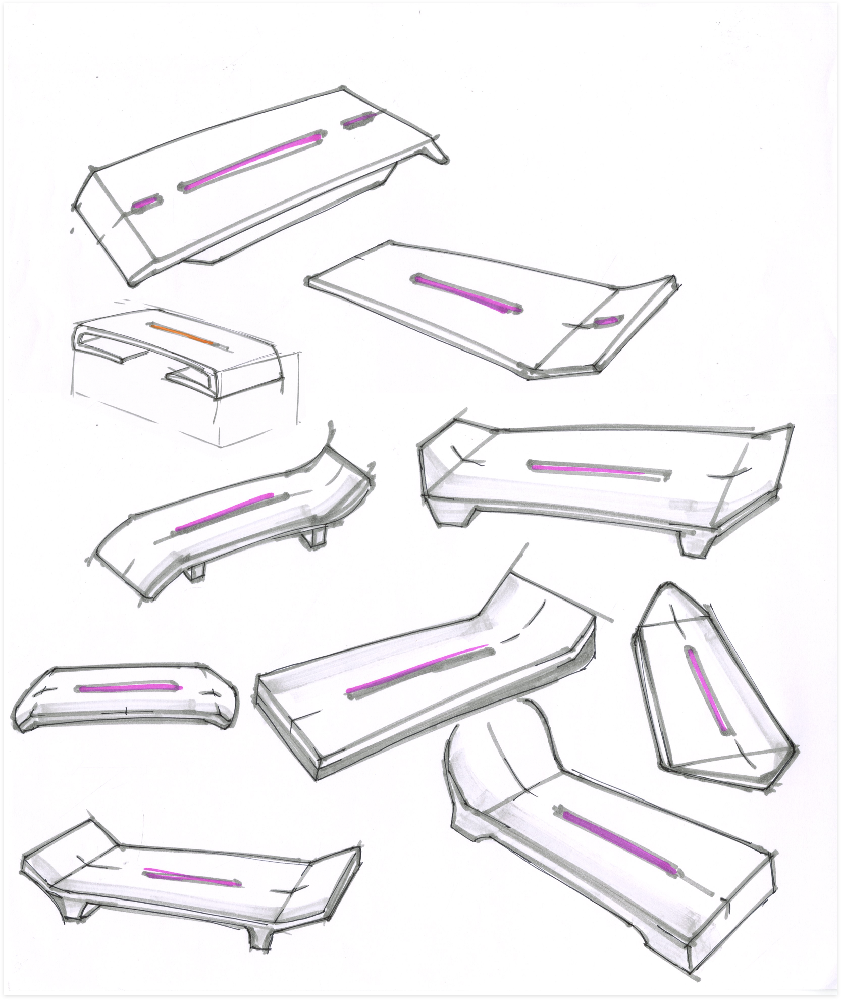
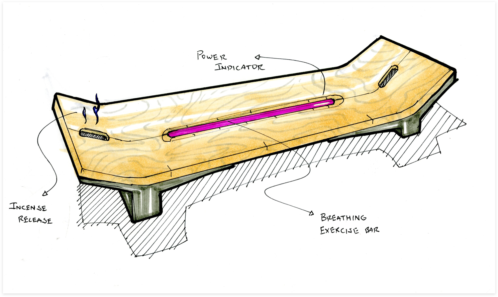
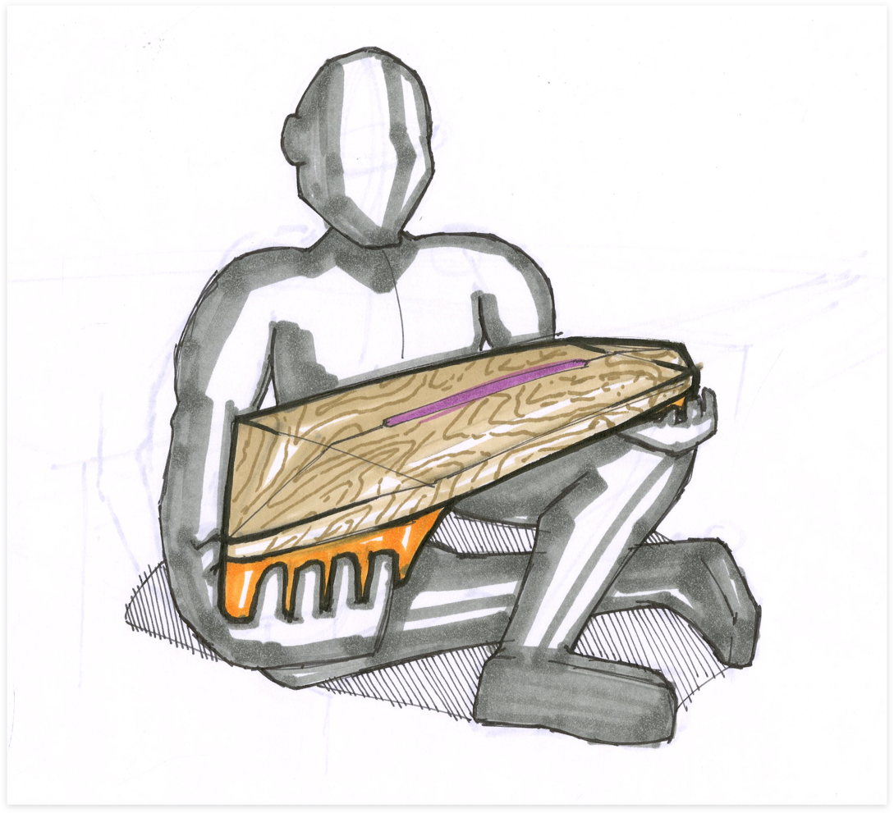

Inspiration + Form Concepting
After looking for existing forms that lend themselves to relaxation and the human body, we selected the incense burner as a starting point.
Some form ideation.
Refining ideation.
 





Refining form top view and interaction.